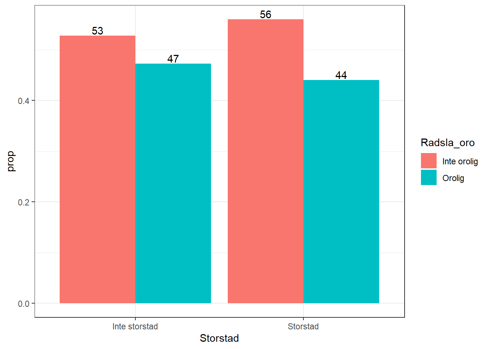
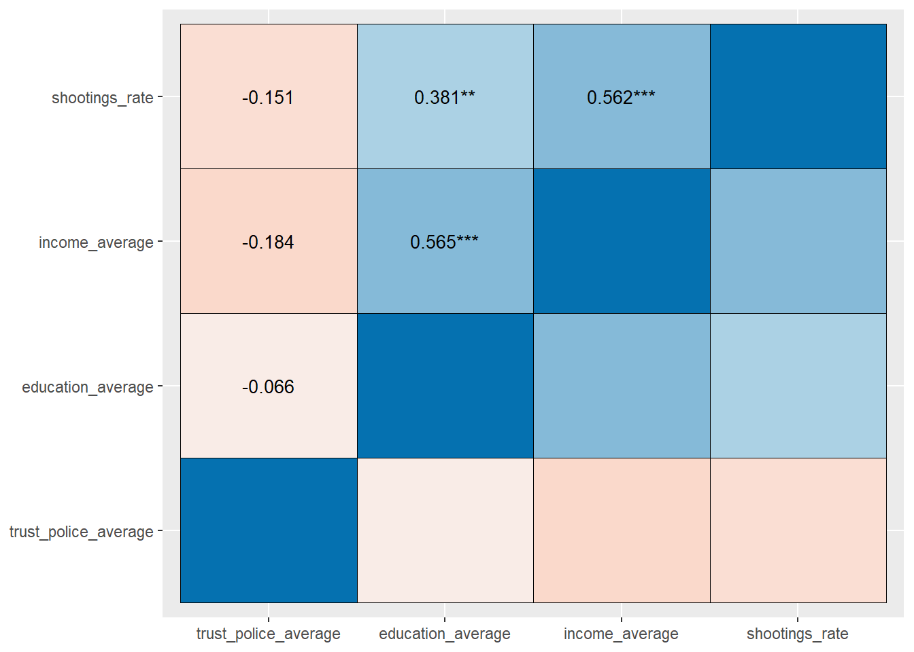
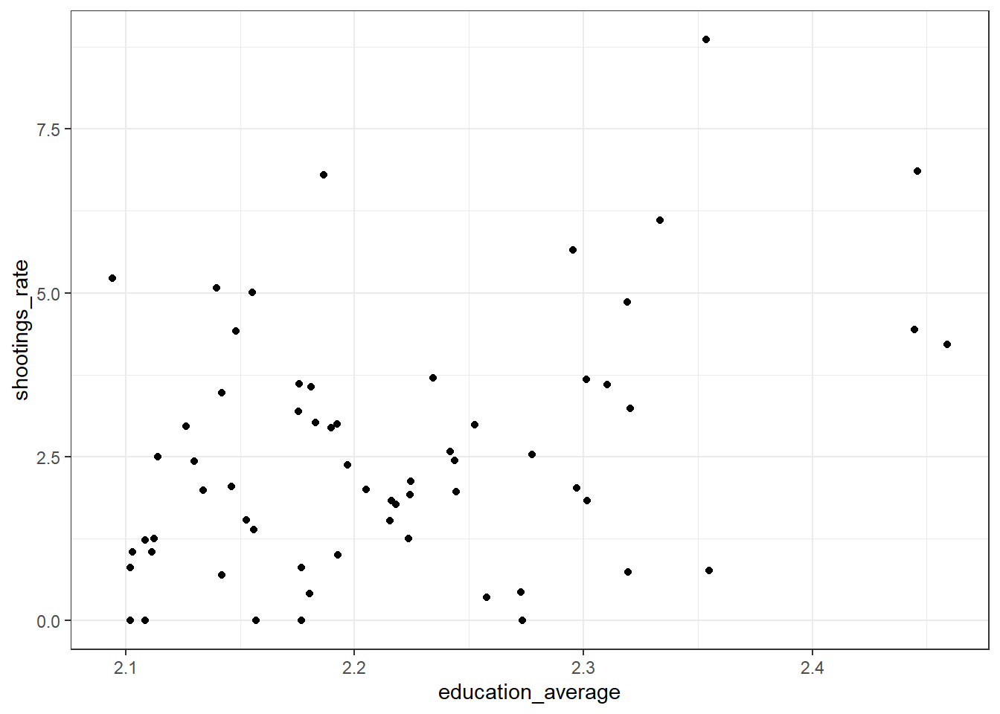
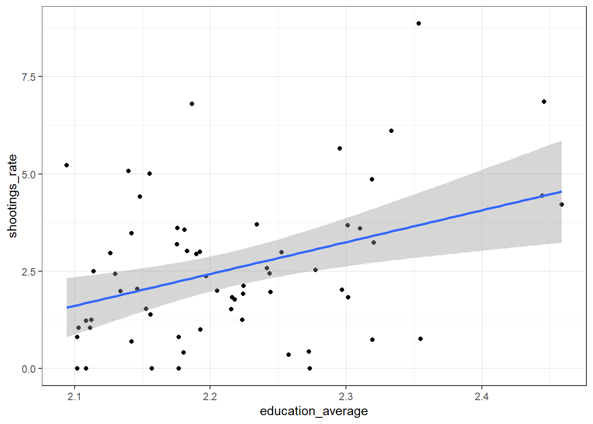
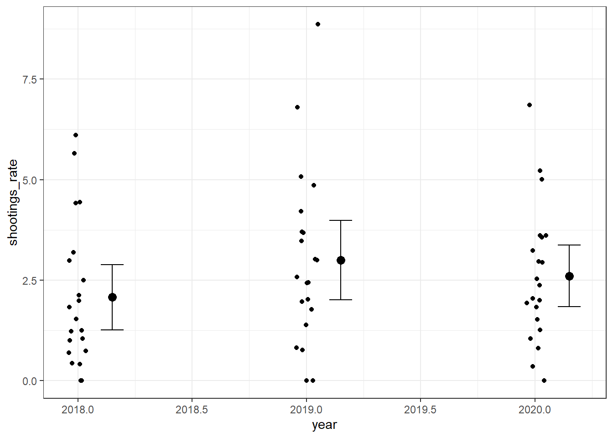

Kapitel 4 Bivariat analys
4.1 Krosstabler: Två kategorisk variabler
Precis som alla andra saker i R det finns många olika sätt att skapa kross tabell i R. Här er den enklaste exempel som beräkna bara hur många fall finns det i värj kategori.
##
## Inte storstad Storstad
## Inte orolig 140012 60760
## Orolig 119997 45354Men vi kan också ändra den kod att räkna ut procent i värj låda
##
## Inte storstad Storstad
## Inte orolig 0.5384891 0.5725917
## Orolig 0.4615109 0.4274083Och vi kan även räkna ut de så att de ser ut som procent
##
## Inte storstad Storstad
## Inte orolig 54 57
## Orolig 46 43Men nu att räkna ut \(\chi {2}\) vi behöver först räkna ut föväntade värderna om de fanns ingen skillnad mellan grupperna. Formel att räckna ut varje cell i en tabell är \({e}= \frac{radtotal \ast koltotal}{total}\) sen från tabellen övanför det skulle ser ut så här
## [1] 142581.9## [1] 58190.06## [1] 117427.1## [1] 47923.94Sen med förväntade värderna vi kan får \(\chi {2}\) genom formeln
\(\chi ^{2}=\sum \frac{(O-E)^2}{E}\)
Och vi kan använder R att räcnka ut \(\chi {2}\) för oss så här:
##
## Pearson's Chi-squared test with Yates' continuity correction
##
## data: df$Storstad and df$Radsla_oro
## X-squared = 353.74, df = 1, p-value < 2.2e-16Men vi kan också använder en packet i R som heter sjPlot att visa alla information i samma plats samt kör \(\chi {2}\) prov.
## Warning: package 'sjPlot' was built under R version 4.4.2tab_xtab(
var.row = df$Radsla_oro,
var.col = df$Storstad,
show.summary = TRUE,
show.col.prc = TRUE,
use.viewer = TRUE
)| Radsla_oro | Storstad | Total | |
|---|---|---|---|
| Inte storstad | Storstad | ||
| Inte orolig |
140012 53.8 % |
60760 57.3 % |
200772 54.8 % |
| Orolig |
119997 46.2 % |
45354 42.7 % |
165351 45.2 % |
| Total |
260009 100 % |
106114 100 % |
366123 100 % |
χ2=353.742 · df=1 · &phi=0.031 · p=0.000 |
Men då vi kan också skapa en figur av skillnader andel de som är orolig baserad på stads storlek.
df %>%
drop_na() %>%
count(Storstad, Radsla_oro) %>%
group_by(Storstad) %>%
mutate(prop = n / sum(n), na.rm=TRUE) %>%
ggplot(aes(x = Storstad, y = prop, fill = Radsla_oro)) +
geom_col(position = position_dodge()) +
geom_text(aes(label = round(100 * prop)),
position = position_dodge(.9), vjust = -.2
)+
theme_bw()
4.2 Korrelationer: Två kontinuerlig variabel
Bara två variabler från datasetet:
shootings %>%
select(shootings_rate, education_average) %>% #Första välja variablerna att inkludera i korrelationsanalys
tab_corr(corr.method='pearson', triangle = 'lower')| shootings_rate | education_average | |
|---|---|---|
| shootings_rate | ||
| education_average | 0.381** | |
| Computed correlation used pearson-method with listwise-deletion. | ||
Sen vi kan kolla på hur alla fyra variabler korrelera med vandra:
shootings %>%
select(shootings_rate, education_average, trust_police_average, income_average) %>% #Första välja variablerna att inkludera i korrelationsanalys
tab_corr(corr.method='pearson', triangle = 'lower')| shootings_rate | education_average | trust_police_average | income_average | |
|---|---|---|---|---|
| shootings_rate | ||||
| education_average | 0.381** | |||
| trust_police_average | -0.151 | -0.066 | ||
| income_average | 0.562*** | 0.565*** | -0.184 | |
| Computed correlation used pearson-method with listwise-deletion. | ||||
shootings %>%
select(shootings_rate, education_average, trust_police_average, income_average) %>% #Första välja variablerna att inkludera i korrelationsanalys
sjp.corr(corr.method = 'pearson')## Warning in sjp.corr(., corr.method = "pearson"): 'sjp.corr' is deprecated.
## Please use 'correlation::correlation()' and its related plot()-method.## Computing correlation using pearson-method with listwise-deletion...## Warning: Removed 10 rows containing missing values or values outside the scale range
## (`geom_text()`).
Sen vi kan visualisera sambandet tillsammans med iakttog punkterna med ggplot. Första vi kan bygga en skatterplot av sambandet
 Sen vi kan lägga till en regressions linje
shootings %>%
ggplot(aes(education_average, shootings_rate))+
geom_point()+
geom_smooth(method= 'lm')+
theme_bw()## `geom_smooth()` using formula = 'y ~ x'
4.3 Jämförelsen av medelvärdet: Kontinuerlig beroende varaibel och kategorisk oberoends variabel
## Df Sum Sq Mean Sq F value Pr(>F)
## year 1 2.97 2.965 0.82 0.369
## Residuals 61 220.51 3.615Sen vi får medelvärdena och konfidensintervaller men ememans packetet
## Warning: package 'emmeans' was built under R version 4.4.2## Welcome to emmeans.
## Caution: You lose important information if you filter this package's results.
## See '? untidy'## year emmean SE df lower.CL upper.CL
## 2019 2.56 0.24 61 2.08 3.04
##
## Confidence level used: 0.95Sen vi kan visualisera sambandet mellan skottfrekvens och år.
shootings %>%
ggplot(aes(year, shootings_rate))+
geom_jitter(position=position_jitter(.05))+
stat_summary(fun.data = mean_cl_normal, geom = "errorbar",
width = 0.1, position=position_nudge(x = 0.15)) +
stat_summary(fun.y = mean, geom = "point",
size = 3, position=position_nudge(x = 0.15))+
theme_bw()## Warning: The `fun.y` argument of `stat_summary()` is deprecated as of ggplot2 3.3.0.
## ℹ Please use the `fun` argument instead.
## This warning is displayed once every 8 hours.
## Call `lifecycle::last_lifecycle_warnings()` to see where this warning was
## generated.